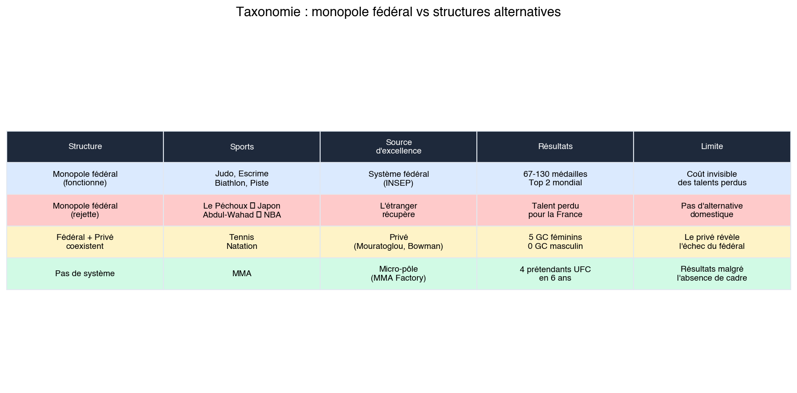

Le calque éducatif
Le sport français ne souffre pas d’un problème sportif. Il souffre d’un problème français. Les mêmes mécanismes qui produisent un système éducatif admiré pour sa couverture et critiqué pour son élitisme invisible produisent un système sportif admiré pour sa densité et critiqué pour son incapacité à élever. Ce n’est pas une analogie. C’est une homologie structurelle : quatre mécanismes identiques, quatre résultats identiques, quatre angles morts identiques.
1. La sélection qui ne dit pas son nom
Le mythe égalitaire
Le système éducatif français se présente comme universel et méritocratique. L’ecole publique, gratuite et obligatoire, accueille tous les enfants de la Republique. L’objectif affiche depuis les années 1980 est d’amener 80 % d’une classe d’age au baccalauréat, seuil symbolique de la réussite éducative de masse. En 2024, le taux de réussite au baccalauréat depasse 90 %. La mission semble accomplie. Mais derriere ce chiffre se déploie un système de sélection occulte d’une efficacité redoutable.
La véritable sélection ne s’opere pas au baccalauréat. Elle s’opere en amont, par l’accès aux filières d’excellence : classés préparatoires aux grandes ecoles, puis concours de l’X, de l’ENS, de HEC, de Sciences Po. Ces institutions constituent l’elite de la Republique. Elles forment les hauts fonctionnaires, les dirigeants d’entreprise, les ingenieurs qui pilotent les programmes strategiques du pays. Or l’accès a ces filières est massivement determine par l’origine sociale. Pierre Bourdieu et Jean-Claude Passeron l’ont demontre des 1964 dans Les Heritiers : la réussite scolaire est moins une affaire de talent individuel que de capital culturel hérité. Le fils de cadre supérieur connait les codes implicites du système. Il sait qu’il existe des classés préparatoires. Il sait que le choix du lycee en seconde conditionne l’accès a ces classés. Il sait que certains lycees parisiens – Louis-le-Grand, Henri-IV, Sainte-Genevieve – offrent des taux d’intégration aux grandes ecoles dix fois superieurs à la moyenne nationale. Ses parents savent negocier avec l’institution, contester une orientation, exiger une dérogation. Le fils d’ouvrier, a talent egal, ignore le plus souvent que ce système existe. Il n’est pas exclu par un acte de discrimination : il est exclu par l’ignorance des regles du jeu.
Le résultat est mesurable. Les enfants de cadres et professions intellectuelles supérieures représentent environ 15 % d’une classe d’age, mais plus de 50 % des élèves de classés préparatoires et plus de 60 % des promotions des grandes ecoles les plus sélectives. L’ascenseur social fonctionne, mais il fonctionne au ralenti, et principalement pour ceux qui savent où se trouve le bouton d’appel.
Le même mécanisme dans le sport
Le système sportif français affiche la même facade égalitaire. Dix-sept millions de licenciés. Plus de 360 000 associations sportives. Le maillage territorial est dense : de la salle omnisports du village aux poles France de l’INSEP, la chaine de formation couvre l’ensemble du pays. Le discours officiel est celui du “sport pour tous”, de la détection democratique, de la chance offerte à chaque enfant de révèler son potentiel.
Mais les données racontent une autre histoire. L’analyse systématique des profils familiaux des médailles français individuels aux Jeux de Paris 2024 révèle un phénomène de reproduction sociale d’une precision troublante.
Sur quarante-quatre médailles individuels français a Paris, onze – soit exactement 25 % – ont au moins un parent qui était sportif de haut niveau. Ce chiffre est déjà significatif : dans la population française, la proportion de parents ayant pratique un sport a haut niveau est de l’ordre de 1 a 2 %. La surrepresentation est donc d’un facteur douze à vingt-cinq.
Mais c’est en resserrant l’analyse sur les médailles d’or que le phénomène atteint son paroxysme. Sur dix champions olympiques individuels français a Paris, quatre avaient un parent sportif de haut niveau. Quarante pour cent. La surrepresentation par rapport à la population générale atteint un facteur vingt à quarante.
Les cas sont documentes avec precision.
Leon Marchand, quadruple champion olympique en natation, est le fils de Xavier Marchand, demi-finaliste olympique en 1996 et 2000, vice-champion du monde du 200 metrès quatre nages en 1998, et de Celine Bonnet, nageuse internationale selectionnee aux Jeux olympiques de Barcelone en 1992 et multiple championne de France. Son oncle, Christophe Marchand, était egalement nageur international. Leon Marchand n’a pas decouvert la natation de haut niveau : il est ne dedans.
Kauli Vaast, champion olympique de surf, est le fils de Gael Vaast, ancien veliplanchiste professionnel et champion de planche a voile. Sa soeur, Aelan, est surfeuse professionnelle. L’ocean, la glisse, la compétition : l’environnement familial était le terreau direct de l’excellence sportive.
Manon Apithy-Brunet, championne olympique de sabre, est là fille de Philippe Brunet, ancien footballeur professionnel à l’Olympique Lyonnais en Ligue 1, et de Sandrine Brunet, championne de France d’aviron. Son mari, Bolade Apithy, est sabreur international. Le sport de haut niveau n’est pas un choix de carrière dans cette famille : c’est une norme culturelle.
Cassandre Beaugrand, championne olympique de triathlon, est là fille de Laure Guillevin, coureuse de demi-fond specialiste du 800 metrès au niveau national, et de Ludovic Beaugrand, entraîneur d’athlétisme au club de Livry-Gargan. L’athlétisme familial a engendre la triathlète.
Le schema se répète parmi les médailles d’argent et de bronze avec la même régularité. Elodie Clouvel, medaillee d’argent en pentathlon moderne, est là fille de Pascal Clouvel, champion de France du 5 000 metrès et membre de l’équipe de France d’athlétisme pendant onze ans, et d’Annick Clouvel, championne de France de marathon, de semi-marathon et de 10 000 metrès. Le pere a manque la sélection olympique de Seoul 1988 de peu. La fille a accompli ce que le pere n’avait pas atteint. Le capital sportif familial s’est transmis à la génération suivante, enrichi et accompli.
Billal Bennama, médaille d’argent en boxe, est le fils de Mohamed Bennama, boxeur devenu entraîneur d’elite, formateur du champion du monde Mahyar Monshipour, et fondateur du Blagnac Boxing Club. Son frere Habib est champion de France. Sa soeur Rym est en équipe de France olympique. Six enfants, tous boxeurs. Le club familial est là matrice.
Felix Lebrun, médaille de bronze en tennis de table, est le fils de Stephane Lebrun, numero sept français et champion de France en double, devenu entraîneur et directeur technique de l’Alliance Nimes-Montpellier. Son oncle, Christophe Legout, a participe à trois Jeux olympiques et a été classe quatorzieme mondial. Son frere Alexis est multiple champion de France et classe dans le top 10 mondial. Le tennis de table, chez les Lebrun, est une affaire de famille sur trois générations.
Valentin Madouas, médaille d’argent en cyclisme sur route, est le fils de Laurent Madouas, cycliste professionnel de 1989 a 2001, participant au Tour de France et médaille de bronze. Son grand-pere était president du club cycliste local. Titouan Castryck, médaille d’argent en canoe-kayak, est le fils d’Anne Boixel, vice-championne du monde individuelle et championne du monde par équipes en kayak, double olympienne (1992, 1996), et de Frederic Castryck, directeur technique regional de la FFCK. Sa soeur Camille est athlète de haut niveau en canoe. Florent Manaudou, médaille de bronze en natation à trente-trois ans, est le frere de Laure Manaudou, championne olympique 2004, recordwoman du monde, multimédaillee olympique.
Ce que ces chiffres signifient
Il ne s’agit pas de nier le talent de ces athlètes. Marchand est un nageur de genie. Lebrun possède un toucher de balle exceptionnel. Apithy-Brunet à une vitesse d’execution au sabre qui releve du prodige. Le talent existe. Mais le talent existe aussi, dans des proportions comparables, chez des milliers d’enfants dont les parents ne sont pas des sportifs de haut niveau, et qui n’accederont jamais aux filières d’excellence parce qu’ils n’en connaissent pas l’existence, n’en maitrisent pas les codes, n’en possedent pas les relais.
Ce que transmettent les familles de sportifs de haut niveau n’est pas un gene de la performance. C’est un capital sportif : la connaissance intime du fonctionnement des fédérations, l’identification précoce des filières de détection, l’accès aux entraîneurs competents, la familiarité avec les exigences du haut niveau, la capacite a naviguer dans un système institutionnel opaque, et surtout la conviction, transmise des la petite enfance, que le sport de haut niveau est un horizon possible. Marchand a grandi dans un environnement ou nager quatre heures par jour était normal. Lebrun a grandi dans un club de tennis de table dirige par son pere. Bennama a grandi dans un ring de boxe. Ce n’est pas du determinisme genetique. C’est du capital culturel sportif, au sens exact ou Bourdieu entendait le capital culturel : un ensemble de dispositions incorporees, de connaissances pratiques et de reseaux relationnels qui conferent un avantage decisif dans un système donne.
Le parallèle avec l’éducation est exact. Le fils de polytechnicien sait ce qu’est Polytechnique. Le fils de champion olympique sait ce qu’est l’INSEP. Dans les deux cas, la sélection ne repose pas sur un acte d’exclusion delibere, mais sur une asymetrie d’information et de disposition qui produit le même résultat qu’une sélection explicite.
2. Le formatage
L’élève modèle
Le système éducatif français est bati sur la transmission d’un programme national uniforme. Les mêmes contenus sont enseignes, selon les mêmes methodes, au même rythme, dans l’ensemble des etablissements du territoire. La dissertation, exercice emblematique, est un format codifie à l’extreme : introduction en trois parties, these-antithese-synthese, conclusion avec ouverture. L’élève qui maitrise le format excelle. Celui qui pense hors cadre – qui développé une argumentation non lineaire, qui privilegia l’intuition sur la methode, qui refuse le plan tripartite – est penalise. Le système valorise la conformite à la norme. Il produit d’excellents executants du programme. Il produit rarement des penseurs originaux.
Cette logique n’est pas un accident. Elle est là consequence d’un choix historique : former une population alphabetisee, disciplinee, capable d’executer les taches que la Republique et l’economie requierent. L’ecole de Jules Ferry avait pour mission de fabriquer des citoyens conformes. Elle a magnifiquement reussi. Mais la conformite, élevée au rang de vertu cardinale, devient un obstacle lorsque l’excellence requiert la singularite.
L’athlète modèle
Le sport français procede exactement de la même manière. Les fédérations definissent des programmes de formation, des cahiers des charges techniques, des profils de joueurs attendus. Les entraîneurs des poles espoirs et des poles France transmettent le geste conforme, la tactique validee, le modèle de joueur homologue par la direction technique nationale.
Le tennis français est le cas d’ecole le plus documente. La Fédération française de tennis a développé, au cours des années 1990 et 2000, une “ecole française” du tennis fondee sur un modèle tactique precis : jeu de fond de court, solidite en echange, capacite à construire le point par la régularité plutot que par la prise de risque. Ce modèle a été enseigné de manière uniforme dans l’ensemble des centrès d’entraînement fédéraux, des clubs formateurs aux poles France. Le résultat a été une génération de joueurs remarquablement homogènes : Richard Gasquet, Jo-Wilfried Tsonga, Gael Monfils, Gilles Simon. Quatre joueurs au style différent en apparence, mais formes dans le même moule, par les mêmes structures, selon les mêmes principes. Quatre joueurs qui ont atteint le top 10 mondial. Quatre joueurs qui n’ont jamais remporte un titre du Grand Chelem. Le plafond n’est pas individuel : il est systemique. Le moule a produit exactement ce qu’il était concu pour produire : de très bons joueurs. Pas des champions.
Ce qui rend le diagnostic plus eclairant encore, c’est que le tennis moderne, depuis le milieu des années 2010, recompense précisément les profils que le système français ne sait pas produire. Stan Wawrinka a remporte son premier Grand Chelem à vingt-huit ans. Marin Cilic à vingt-cinq ans. Daniil Medvedev à vingt-cinq ans. Carlos Alcaraz à dix-neuf ans, certes, mais avec un profil de joueur agressif, createur, preneur de risque – l’antithese du modèle français. Le tennis de haut niveau recompense désormais la singularite, la capacite a rompre le schema tactique, l’audace. Le système français continue de produire la conformite.
Dans les sports où la France excelle – l’escrime, le judo, le cyclisme sur piste, les haies, le decathlon, le saut à la perche – le formatage n’est pas un problème. Il est là solution. Ces sports sont, par nature, des sports où le geste correct, transmis par le maitre à l’élève, répétition après répétition, produit l’excellence. L’escrime est là codification du geste par excellence : chaque touche est le produit de milliers d’heures de répétition d’enchainements techniques. Le judo repose sur l’apprentissage de techniques classees, nommees, enseignees dans un ordre progrèssif. Le decathlon est le sport de l’élève modèle, celui qui excelle dans toutes les matières. La perche est de la gymnastique sur une tige flexible, un enchainement biomecanique d’une complexite extreme que seule la répétition methodique peut maitriser.
Dans ces sports, la force du système français – transmettre le geste codifie, enseigner la methode, former par la répétition – produit des champions du monde et des médailles olympiques avec une régularité remarquable. Trois champions olympiques en trente ans au saut à la perche. Cent trente médailles olympiques en escrime. Soixante-sept médailles en judo. Le formatage fonctionne la où le sport est lui-même un exercice de formatage.
Mais la où le sport requiert l’invention, la rupture, l’improvisation – le sprint, les lancers, le tennis de Grand Chelem, le football de très haut niveau – le même formatage qui produisait l’excellence dans les sports techniques devient le plafond de verre. Le système ne sait pas former un Usain Bolt, parce que Bolt n’est pas formatable. Il ne sait pas produire un Rafael Nadal, parce que Nadal s’est construit hors de tout système fédéral, avec un oncle pour seul entraîneur, dans un parcours sur mesure que nulle institution n’avait prevu. La force du système français – transmettre les normes – est aussi sa limite : il ne sait pas transmettre ce qui, par définition, echappe à la norme.
3. Le rejet des profils atypiques
Le parcours lineaire comme seul parcours
Le système éducatif français est fonde sur la linearite du parcours. L’élève est identifié tot, oriente des la troisieme, dirige vers les classés préparatoires en terminale, integre une grande ecole à vingt ans, obtient son premier poste à vingt-trois ans. Celui qui devie de cette trajectoire – qui redouble, qui se reoriente, qui interrompt ses etudes pour travailler, qui reprend une formation à trente ans – est sorti du système. La réorientation n’est pas une bifurcation : c’est un echec. Le parcours non lineaire n’est pas une alternative : c’est une anomalie. Le système ne dispose d’aucun mécanisme structure pour accueillir les progrèssions tardives, les reconversions, les vocations differees.
Les preuves par les cas
Le sport français applique la même logique avec la même rigidite. L’athlète qui ne figure pas dans les listes espoirs à seize ans, qui n’est pas en pole France à dix-huit ans, qui ne produit pas de résultats internationaux avant vingt-deux ans, cesse d’exister aux yeux de sa fédération. Les cas de rejet de profils atypiques ne sont pas anecdotiques. Ils forment un schema récurrent, documente sur plusieurs décennies et dans plusieurs disciplines.
Tariq Abdul-Wahad est le premier Francais a avoir joue en NBA. En 1997, il est selectionne au onzieme rang de la draft par le Sacramento Kings, une sélection de premier tour qui témoigne d’un talent exceptionnel reconnu par le système americain. Mais avant d’atteindre la NBA, Abdul-Wahad a été rejété par le système français. L’INSEP ne l’a pas retenu. La filière fédérale ne l’a pas identifié comme un joueur de haut potentiel. C’est en partant aux Etats-Unis qu’il a pu se révèler. Recrute d’abord par l’universite du Michigan – l’une des plus prestigieuses du basketball universitaire, celle du legendaire Fab Five –, il est ensuite transfere a San Jose State, où il explose et attire l’attention des scouts NBA. Le parcours est révélateur a double titre : le système français a rejété un profil que Michigan, programme d’elite, a immédiatement identifié comme un talent de premier plan. Et c’est dans un programme de second rang (San Jose State), avec plus de temps de jeu et de responsabilites, qu’Abdul-Wahad a atteint sa pleine mesure. Le système français a produit la matière première. Le système americain – dans sa diversité, ses passerelles, sa tolerance aux trajectoires non lineaires – a détecté le potentiel et l’a développé. Le profil d’Abdul-Wahad – atypique, puissant, agressif, peu conforme au style de jeu français de l’epoque – ne correspondait pas au moule. Le moule l’a rejete. La NBA l’a accueilli.
Erwan Le Pechoux est un cas qui demontre que le rejet des profils atypiques ne concerne pas seulement les athlètes, mais aussi les entraîneurs. Maitre d’armes français, Le Pechoux s’est vu signifier par le système fédéral français qu’il n’avait pas les compétences requises pour entrainer au plus haut niveau en France. Juge “pas assez competent” par les instances de sa propre fédération, il est parti au Japon. Aux Jeux de Paris 2024, l’équipe japonaise d’escrime qu’il entrainait a remporte la médaille d’or. Champion olympique à la tété d’une équipe étrangère, rejété par son propre pays. Le cas Le Pechoux est là demonstration la plus pure du mécanisme : le système ne sait pas evaluer ce qui ne correspond pas à ses critères, et il perd ses meilleurs elements en les declarant inadequats.
Cedric Pioline demeure, plus de deux décennies après sa retraite, le seul joueur français a avoir dispute deux finales de Grand Chelem en simple messieurs à l’ere Open : l’US Open en 1993 et Wimbledon en 1997. Son profil était atypique pour le tennis français. Sa progrèssion n’a pas suivi la trajectoire lineaire des joueurs issus des filières federales. Il n’a jamais été le produit du système de formation français tel que la FFT le concevait. Son parcours, fait de detours et de maturation lente, est l’antithese du modèle fédéral, et c’est précisément ce parcours qui lui a permis d’atteindre un niveau que les joueurs formates dans le moule n’ont jamais touche.
Ciryl Gane illustre le rejet des progrèssions tardives et des reconversions entre disciplines. Arrive dans les arts martiaux mixtes à l’age de vingt-huit ans, après une carrière en muay-thai, Gane a atteint le sommet de l’UFC – champion interim des poids lourds – en seulement trois ans. A vingt-huit ans, dans le système sportif français, un athlète est en fin de carrière ou en reconversion. L’idee qu’un homme puisse debuter un nouveau sport à cet age et atteindre le sommet mondial en trois ans n’entre dans aucune grille fédérale. Gane ne s’est pas construit dans le système. Il s’est construit malgre l’absence de système, dans un sport – le MMA – que la France a longtemps refuse de reconnaitre et de structurer. Son parcours est là demonstration qu’un talent exceptionnel, même tardif, peut eclore à condition que le système ne s’interpose pas. C’est une refutation vivante de la doctrine de la détection précoce.
Nicolas Portal est un cas encore plus révélateur, parce qu’il concerne non pas un athlète mais un cadre technique. Coureur cycliste professionnel au parcours modeste, sans résultat majeur en course, Portal est devenu le plus grand directeur sportif de sa décennie. A la tété de l’équipe Sky puis Ineos, il a pilote huit victoires sur les Grands Tours, dont quatre Tours de France consecutifs avec Chris Froome, puis les victoires de Geraint Thomas et Egan Bernal. Son palmares de directeur sportif est sans équivalent dans le cyclisme contemporain. Mais Portal n’a pas été détecté par le système français. C’est Dave Brailsford, un Britannique, qui a identifié son intelligence tactique et sa capacite de gestion d’équipe, et qui l’a recrute pour construire la plus grande équipe cycliste de l’ere moderne. Le système français a forme un coureur moyen. Le système britannique a détecté un stratege exceptionnel. La France avait Portal. Elle ne savait pas qu’elle l’avait.
Le schema structurel
Ces cas ne sont pas des anomalies. Ils sont les symptomes d’un système qui ne dispose d’aucun mécanisme pour gerer trois types de situations : la progrèssion tardive (Gane, qui debute à vingt-huit ans), la reconversion entre disciplines (Portal, coureur devenu directeur sportif), et le profil non conforme (Abdul-Wahad, Le Pechoux, Pioline). Dans chacun de ces cas, le système n’a pas simplement ignore l’individu : il l’a activement ecarte, soit en ne le retenant pas (Abdul-Wahad), soit en le declarant incompetent (Le Pechoux), soit en ne lui offrant aucun cadre adapte (Gane, Portal).
Le système éducatif français présente exactement la même pathologie. L’etudiant qui interrompt ses etudes à vingt ans pour créer une entreprise et revient à trente ans completer une formation n’a pas de place dans le système. Le salarie qui souhaite se reconvertir à quarante ans doit naviguer un labyrinthe administratif – validation des acquis de l’experience, conge individuel de formation, financement personnel – que le système n’a pas concu pour lui. La formation continue existe, mais elle est l’exception toleree, pas la norme encouragee. Dans les deux systemes, le parcours lineaire est le seul parcours reconnu. Tout ce qui en devie est un accident a corriger, pas une trajectoire a accompagner.
4. Le piege du confort domestique
Le CDI comme horizon
Le système éducatif français, dans sa finalite implicite, forme des salaries. L’objectif non dit de la chaine éducative – ecole, college, lycee, universite ou grande ecole – est de produire des diplomes qui occuperont un emploi stable, idealement sous la forme d’un contrat a duree indeterminee ou d’un poste de fonctionnaire. La sécurité de l’emploi est là recompense terminale du parcours. Le CDI est l’horizon.
Cette culture de la stabilité à des vertus considerables. Elle offre une protection sociale sans équivalent dans le monde anglo-saxon. Elle permet une vie professionnelle previsible, une planification a long terme, un filet de sécurité en cas de difficulté. Mais elle produit aussi un effet secondaire mesurable : l’aversion au risque. Lorsque le statut est garanti, la prise de risque est irrationnelle. Pourquoi quitter un CDI pour créer une entreprise ? Pourquoi renoncer à la sécurité pour tenter l’aventure ? La réponse rationnelle, dans le système français, est : il n’y a aucune raison de le faire. Le confort domestique n’est pas une faiblesse individuelle. C’est une incitation systemique.
Le confort domestique dans le sport
Le sport français présente le même phénomène, et il est documentable avec precision dans trois domaines : l’athlétisme, le cyclisme et l’entraînement.
L’athlétisme a connu, dans les années 1990, un age d’or du circuit routier. Les courses sur route – 10 kilometrès, semi-marathons, marathons regionaux – offraient des primes substantielles aux athlètes de bon niveau national. Un athlète capable de courir un marathon en 2h15 où un 10 kilometrès en 29 minutes pouvait gagner 150 000 francs par course sur le circuit français, en enchainant les épreuves tout au long de l’année. C’était un revenu confortable pour un athlète qui, sur le circuit international, n’aurait été qu’un figurant. Le circuit domestique offrait une vie decente sans exiger l’excellence mondiale. Le résultat a été previsible : une génération d’athlètes de demi-fond s’est installee dans le confort du circuit routier français, renonçant à la compétition internationale pour garantir des revenus stables. Le phénomène s’est reproduit, sous une forme différente, avec l’explosion du trail et de l’ultra-trail dans les années 2010-2020. L’UTMB et ses épreuves derivees offrent désormais aux coureurs d’endurance français un écosystème domestique lucratif – sponsors, primes, contrats d’image – qui rend la compétition en athlétisme sur piste economiquement irrationnelle. Pourquoi s’entrainer pour les championnats du monde d’athlétisme, où la concurrence est mondiale et les revenus incertains, quand on peut gagner sa vie sur les sentiers du Mont-Blanc ?
Le cyclisme fournit la demonstration la plus spectaculaire du lien entre confort et sous-performance. Le circuit amateur N1 français – la Division nationale 1 du cyclisme amateur – a constitue pendant des années un piege dore pour des coureurs qui, dans un autre système, auraient pu atteindre le professionnalisme. Quatre-vingt pour cent des coureurs de N1 percevaient un salaire, ce qui en faisait des semi-professionnels de fait, sans les exigences ni l’exposition du cyclisme professionnel. Le cas de Plouhinec est emblematique : un coureur qui a accumule 402 victoires en amateur, un palmares vertigineux au niveau domestique, sans jamais franchir le pas vers le professionnalisme. Quatre cent deux victoires dans un circuit ferme, contre des adversaires connus, dans des courses sans enjeu international. C’est l’équivalent sportif du fonctionnaire qui accumule les promotions internes sans jamais quitter son administration.
Le moment révélateur est survenu lorsque le circuit N1 s’est effondre. En deux saisons, le nombre de clubs est passe de vingt-huit à dix-neuf. La structure de confort a disparu. Et c’est précisément à ce moment-la qu’a emerge la génération la plus talentueuse du cyclisme français contemporain. Paul Magnier, Antonio Seixas, Lenny Martinez : des coureurs qui, prives du filet de sécurité amateur, ont été contraints de viser directement le professionnalisme. L’effondrement du confort domestique a libere le potentiel. Quand le circuit N1 existait, il absorbait les talents. Quand il a disparu, les talents se sont diriges vers le haut. La corrélation est trop nette pour etre fortuite.
L’entraînement est le troisieme domaine où le confort domestique produit ses effets les plus visibles. Les entraîneurs français bénéficient d’un statut protecteur : CDI dans les clubs où les fédérations, droits au chomage entre deux postes, cotisations retraite, protection sociale. Ce statut est enviable au regard de la précarité que connaissent les entraîneurs dans de nombreux pays. Mais il produit un effet pervers : la sédentarité. Pourquoi partir entrainer à l’étranger, dans des conditions incertaines, avec un contrat precaire, dans une langue étrangère, quand on peut rester en France avec un CDI et une mutuelle ?
Le résultat est mesurable. En soixante ans de basketball, la France n’a exporte que trois entraîneurs vers des ligues majeures étrangères. Trois. Pour un pays qui est le deuxieme vivier mondial de joueurs NBA, qui a forme des dizaines de joueurs All-Star, qui possède l’un des meilleurs systemes de détection au monde, l’exportation d’entraîneurs est proche de zero. Le contraste avec le judo est encore plus frappant : le judo français exporte des dizaines d’entraîneurs chaque année – vers le Japon, le Bresil, l’Algerie, la Georgie – parce que le judo français dispose d’une valeur d’exportation reconnue (l’ecole française de judo est respectee dans le monde entier) et que le marche domestique des entraîneurs de judo est trop etroit pour absorber tous les diplomes. L’escrime exporte egalement, comme l’a demontre a contrario le cas Le Pechoux : quand le système rejette un entraîneur, celui-ci exporte son savoir-faire et produit des champions olympiques pour un autre pays. Le cyclisme exporte ses directeurs sportifs – Portal chez Sky/Ineos, d’autrès dans des équipes WorldTour – parce que le savoir-faire tactique français est recherche par les équipes étrangères. Mais le basketball, le handball, le volleyball – les grands sports collectifs français – gardent leurs entraîneurs chez eux. Le confort du CDI domestique est plus fort que l’ambition internationale.
La loi du confort inverse
Le schema est général et il admet une formulation simple : quand le confort domestique diminue, la performance internationale augmente. Le cyclisme l’a demontre par la disparition du N1. L’athlétisme l’a demontre a rebours, par l’aspiration du trail. Le basket l’a demontre par la negative, en gardant ses entraîneurs au chaud. Dans chaque cas, la variable explicative est là même : l’existence d’un filet de sécurité domestique suffisamment confortable pour que la prise de risque internationale devienne irrationnelle.
Le système éducatif français obeit à la même loi. Le CDI, l’assurance chomage, la retraite a taux plein constituent un filet de sécurité qui, en protegeant le salarie, desincite l’entrepreneur. La France produit moins de startups par habitant que les Etats-Unis, le Royaume-Uni ou Israel. Elle produit moins de brevets par chercheur que l’Allemagne où la Coree du Sud. Non pas par manque de talent – le talent est là – mais par absence d’incitation a prendre le risque. Le système est suffisamment bon pour que l’ambition de le transcender paraisse deraisonnable.
Synthese : la force qui est aussi la faille
Les quatre mécanismes – la sélection invisible, le formatage, le rejet des atypiques, le piege du confort – ne sont pas quatre problèmes independants. Ils sont les quatre facettes d’une même logique institutionnelle, commune au système éducatif et au système sportif français.
Cette logique pourrait se resumer en une phrase : le système français excelle a transmettre des normes, et cette excellence dans la transmission des normes est à la fois sa plus grande force et sa plus grande faiblesse.
La force est réelle et considerable. Un système qui sait codifier le savoir, le structurer en programmes, le transmettre de manière uniforme sur l’ensemble du territoire, evaluer les élèves selon des critères objectifs, et produire en masse des individus competents dans les domaines definis – ce système est une prouesse civilisationnelle. C’est cette force qui produit les meilleurs escrimeurs du monde, les meilleurs judokas, les meilleurs perchistes, les meilleurs decathloniens, les meilleurs biathletes. C’est cette force qui produit les meilleurs mathematiciens, les meilleurs ingenieurs aeronautiques, les meilleurs physiciens nucleaires. La où l’excellence se definit par la maitrise d’un corpus de connaissances et de gestes transmissibles, le système français est redoutable.
La faiblesse est le revers exact de cette force. Un système construit pour transmettre des normes ne sait pas gerer ce qui echappe aux normes. Il ne sait pas détecter le talent qui ne correspond pas au profil attendu. Il ne sait pas accompagner la trajectoire qui devie du plan prevu. Il ne sait pas valoriser le risque quand la sécurité est garantie. Il ne sait pas, en un mot, produire l’exception. Parce que l’exception, par définition, est ce que la norme ne peut pas contenir.
Le système éducatif français ne produit pas de Steve Jobs. Non pas parce que la France manque de genies informatiques – elle en regorge – mais parce que le système ne sait que faire d’un jeune homme qui quitte l’universite à vingt ans pour bricoler des ordinateurs dans un garage. Ce profil n’entre dans aucune case. Il n’est pas normalien. Il n’est pas polytechnicien. Il n’a pas de diplome. Il n’a pas de CDI. Il n’existe pas.
Le système sportif français ne produit pas de Ciryl Gane en son sein. Non pas parce que la France manque d’athlètes exceptionnels – elle en produit des milliers chaque année – mais parce que le système ne sait que faire d’un homme de vingt-huit ans qui decide de changer de sport. Ce profil n’entre dans aucune liste espoir. Il n’est pas en pole France. Il n’a pas été détecté à quatorze ans. Il n’a pas suivi le cursus. Il n’existe pas.
Dans les deux cas, l’individu doit contourner le système pour atteindre l’excellence. Marchand part en Arizona. Abdul-Wahad part a San Jose. Portal est recrute par un Britannique. Le Pechoux part au Japon. Gane se construit dans un sport que la France ne reconnaissait pas. La trajectoire est toujours la même : le système forme la base, mais l’exception se construit ailleurs.
5. Le monopole fédéral : force et angle mort
L’article L131-14 du Code du sport dispose que, dans chaque discipline, une seule fédération agreee recoit délégation de l’État. Cette délégation confere un monopole : seule la fédération délégataire peut organiser les compétitions officielles et delivrer les titrès. Organiser un championnat sans cette délégation est passible d’une amende de 7 500 euros. Ce cadre juridique ne créé pas, a lui seul, un monopole absolu : un club non affilie peut exister, former des athlètes, organiser des stages. Mais il ne peut pas delivrer de titrès, organiser de championnats, ni selectionner pour les Jeux olympiques. Le monopole réel est donc à la fois juridique et pratique : pour exister dans la compétition officielle, un athlète DOIT passer par la fédération. Et c’est là compétition officielle qui determine la sélection internationale. Le résultat est une structure binaire : dans chaque sport, tu es dans le système ou tu n’existes pas au plus haut niveau.
Ce monopole produit des effets radicalement différents selon qu’il fonctionne ou non, et selon qu’une alternative existe ou non.
Quand le monopole fonctionne, il est imbattable. Le judo est le cas parfait. La licence FFJDA est obligatoire pour tout membre de club affilie, y compris les pratiquants loisir. La filière est un pipeline unique : clubs, poles espoirs, poles France, INSEP. Plus de 90 % des médailles olympiques francaises en judo sont passees par l’INSEP. Il n’existe aucune structure privee de judo de haut niveau en France, aucun équivalent d’une academie independante. Le système est total. Et le résultat est là : deuxieme nation mondiale, soixante-sept médailles olympiques, une chaine de transmission ininterrompue depuis cinquante ans. L’escrime, le biathlon, le cyclisme sur piste fonctionnent selon la même logique : monopole fédéral, pipeline unique, excellence.
Mais le monopole rend invisible son cout d’opportunite. En tennis, la coexistence entre le système fédéral (FFT, 7 000 clubs, CNE de Roland-Garros) et des structures privees (Mouratoglou Academy, All In Academy de Tsonga, HDN Academy) permet une comparaison directe. Et la comparaison est accablante. Depuis 1983, zero Grand Chelem masculin pour les produits du système fédéral (Gasquet, Tsonga, Monfils, Simon : tous dans le top 10, aucun titre majeur). Cinq Grand Chelem feminins pour des joueuses formees hors système (Pierce aux Etats-Unis, Bartoli par son pere, Mauresmo en marge de la FFT). La denonciation de Jo-Wilfried Tsonga est explicite : il pointe une “espece de petite gueguerre” entre la FFT et les academies privees, et critique la posture fédérale du “nous sommes la fédération et les autrès sont nuls, c’est seulement avec nous qu’on peut fabriquer des champions.”
En judo, on ne peut pas faire cette comparaison. Il n’y a pas d’alternative pour la mesurer. S’il existait un “Mouratoglou du judo” a Marseille, avec des methodes non conventionnelles, produirait-il un champion que l’INSEP n’a pas détecté ? On ne le saura jamais, parce que le monopole interdit l’existence de l’alternative. Le cas Le Pechoux prouve que le monopole rejette des talents – mais cote entraîneurs, pas cote athlètes, parce qu’un athlète rejété n’a nulle part ou aller.
En MMA, l’absence totale de système fédéral pendant vingt-cinq ans a produit des résultats spectaculaires : quatre pretendants au titre UFC en six ans de legalite, formes dans des structures privees sans subvention. Le MMA est là preuve que lorsque le monopole n’existe pas, le talent trouve son chemin par d’autrès voies – plus chaotiques, plus inegales, mais fonctionnelles.
La taxonomie qui emerge est là suivante. Dans les sports a monopole fédéral fonctionnel (judo, escrime, biathlon), l’excellence vient du système. Dans les sports où le fédéral coexiste avec le prive (tennis, natation), l’excellence vient du prive. Dans les sports sans système (MMA), l’excellence vient du micro-pole. Pour mesurer la solidite de ce monopole, posons une experience de pensee. Un investisseur prive créé un club de judo d’elite a Marseille. Il y rassemble quatorze judokas de très haut niveau, avec les meilleurs entraîneurs, les meilleurs moyens. Ces judokas prennent une licence FFJDA – ils y sont legalement obliges. Ils participent aux championnats de France. Ils gagnent. Jusque-la, le droit le permet.
Mais le verrou est ailleurs, et il est total. Dans le système IJF (International Judo Federation), l’inscription aux compétitions internationales – Grand Slam, Grand Prix, championnats du monde – passe OBLIGATOIREMENT par la fédération nationale. Un judoka individuel ne peut pas s’inscrire lui-même, quel que soit son classement mondial. La fédération nationale dispose d’un quota d’athlètes par catégorie de poids pour chaque compétition, et c’est elle qui choisit qui elle envoie. Le classement mondial IJF est base sur les résultats obtenus en compétition, mais pour obtenir ces résultats, il faut etre inscrit par sa fédération. C’est un verrou auto-renforcant : pas d’inscription fédérale, pas de compétition, pas de points, pas de classement, pas de qualification olympique. Le milliardaire peut financer l’entraînement, la preparation physique, les stages au Japon. Il ne peut pas acheter l’accès au tatami d’un Grand Slam. Seule la FFJDA detient cette cle.
Le même mécanisme s’applique en escrime (les inscriptions aux Coupes du monde FIE passent par la fédération nationale) et dans la quasi-totalite des sports olympiques : athlétisme, natation, cyclisme, gymnastique. Le monopole sur l’accès aux compétitions internationales est là regle, pas l’exception.
Le tennis est là seule exception majeure – et c’est précisément ce qui rend la comparaison eclairante. Sur le circuit ATP/WTA, l’inscription est 100 % individuelle, basee sur le classement. Un joueur de tennis n’a besoin de l’accord de personne pour jouer Roland-Garros, à condition d’etre dans le top 100 mondial. La FFT ne peut ni l’empecher de jouer ni conditionner son accès. Benoit Paire a pu multiplier les declarations provocantes envers la FFT tout en continuant a jouer sur le circuit sans aucune consequence sur son accès aux tournois. Le seul levier de la FFT est là Coupe Davis et les invitations (wild cards) a Roland-Garros – des leviers marginaux dans la construction d’une carrière. Le joueur de tennis est un entrepreneur independant. Le judoka est un fonctionnaire du système fédéral.
Cette difference structurelle renforce la these plutot qu’elle ne la contredit. Le tennis, avec son système d’inscription individuelle, est le sport le plus méritocratique du paysage : pas de filtre fédéral, pas de pouvoir discretionnaire, les profils atypiques et les progrèssions tardives sont possibles. Et pourtant, la France ne produit pas de champion de Grand Chelem masculin depuis quarante-trois ans. Le monopole fédéral n’est donc pas la seule explication du plafond de verre français. Le formatage culturel – la formation d’un modèle de joueur conforme, la preference pour la sécurité du circuit domestique, l’aversion au risque – opere même dans les sports où le système fédéral n’a pas le pouvoir de l’imposer. En judo, le monopole fonctionne parce que le formatage est productif (sports techniques, enseignables). En tennis, le formatage echoue parce que le sport exige l’invention, la singularite, la rupture – et que le système français, même quand il ne controle pas l’accès, produit des joueurs qui ne savent pas rompre.
Le parallèle avec les grandes ecoles est exact : on peut preparer le concours de Polytechnique seul dans sa chambre. Mais si l’on n’a pas fait Louis-le-Grand ou Sainte-Genevieve, les chances sont statistiquement nulles. Non pas parce que le concours est biaise – il ne l’est pas formellement – mais parce que l’écosystème de preparation est entre les mains des mêmes acteurs qui definissent les critères d’excellence. En judo, l’écosystème de compétition est entre les mains de la fédération. L’athlète qui n’est pas dans l’écosystème n’existe pas. La seule echappatoire documentee est le changement de nationalite sportive – avec un delai de carence de trois ans impose par l’IJF. C’est l’équivalent sportif de l’expatriation des cerveaux : quand le système ne vous reconnait pas, vous partez.
La question n’est pas de savoir s’il faut casser le monopole du judo – ce serait absurde, il fonctionne. La question est de savoir si le succès du monopole ne masque pas un cout invisible : celui de tous les talents qui n’ont jamais eu l’opportunite de se révèler parce que le système ne les a pas vus, et qu’aucune alternative n’existait pour les accueillir.
6. Le formatage genre
Il existe dans le sport français un paradoxe que les données rendent visible mais que personne ne formule : les femmes francaises surperforment les hommes dans les sports individuels où le système fédéral est le plus present. Le cas du tennis est le plus accablant : cinq titrès du Grand Chelem feminins depuis 1995 (Pierce, Mauresmo, Bartoli) contre zero masculin en quarante-trois ans. Le cas du judo est plus nuancé mais tout aussi révélateur. Teddy Riner n’est pas un produit du système. C’est un outlier que le système n’a pas pu freiner – un athlète de 2m04, 130 kg, qui domine sa catégorie pendant quinze ans et qui aurait été champion dans n’importe quel pays, avec n’importe quel pipeline. La question n’est pas pourquoi la France ne produit pas de Riner en athlétisme. On ne fabrique pas les GOAT. La question est : pourquoi le vivier en dessous est-il si mince ? Sans Riner, le bilan masculin sur 2000-2024 se réduit à quatre médailles individuelles et un seul titre (Douillet en 2000). Quatre médailles en vingt-quatre ans pour la deuxième nation mondiale du judo avec 600 000 licenciés. Les femmes, sur la même période, ont produit quinze médailles individuelles, trois titrès olympiques différents (Décosse, Andéol, Agbégnénou) et plus de huit médaillées différentes. Le système ne fabrique pas les génies. Il fabrique la densité au-dessous du génie. Et c’est cette densité qui manque côté masculin.
L’hypothèse qui se degage est celle-ci : le formatage fédéral produit des effets differencies selon le genre, et ces effets eclairent le mécanisme général. Dans le tennis, les hommes ont été les premiers bénéficiaires de l’investissement fédéral – les poles, les moyens, l’attention des cadres techniques. Et ce sont eux qui plafonnent. Les femmes, moins investies par le système, ont du se construire par d’autrès voies – souvent plus solitaires, plus risquees, plus atypiques. Et ce sont elles qui gagnent. Le constat n’est pas que l’absence de soutien est benefique – ce serait une lecture absurde et dangereuse. Le constat est que le formatage est deletere, et que ceux qui y echappent – par choix ou par defaut – conservent la liberte de jeu et la singularite que le système erode chez ceux qu’il encadre le plus etroitement. Pierce a grandi aux Etats-Unis, hors du système FFT. Bartoli a été formee exclusivement par son pere, medecin, selon des methodes que la FFT considerait comme non orthodoxes – au point d’interdire à son pere de la coacher en Fed Cup. Mauresmo s’est construite en tension avec le système fédéral. Les trois championnes ne sont pas des produits de l’abandon institutionnel. Elles sont des produits de la liberte methodologique – une liberte que le système fédéral n’accorde pas à ceux qu’il prend en charge.
Les données économiques confirment l’asymétrie structurelle. Le sport féminin ne capte que 6 % du marché du sponsoring en France (contre 73 % pour le masculin). Le temps d’antenne télévisé consacré aux compétitions féminines est de 4,5 %. Les salaires moyens en D1 de football féminin sont trente-cinq fois inférieurs à ceux de la Ligue 1 masculine. En rugby, les joueuses d’Élite 1 gagnent entre 100 et 400 euros par mois en club, quand le salaire moyen en Top 14 est de 20 000 euros. Le cyclisme féminin WorldTour fonctionne avec un budget total de 70 millions d’euros, soit un neuvième du peloton masculin. Seule l’athlétisme, via la Diamond League, a atteint la parité des primes depuis 2010. Ce ne sont pas des données de militantisme. Ce sont des données de marché qui expliquent pourquoi les femmes se construisent hors systeme : le systeme n’investit pas en elles.
Le parallèle éducatif est precis. Les filles reussissent mieux que les garcons à chaque étape du système scolaire français : taux de réussite au baccalauréat de 84 % pour les filles contre 75 % pour les garcons, davantage de mentions Bien et Tres Bien, meilleurs résultats au brevet. Mais les filles ne représentent que 16 % des admis a Polytechnique en 2024, 30 % des effectifs de classés préparatoires scientifiques, 25 % des professeurs d’universite. Le même schema se retrouve dans le sport : 38,6 % des licences sportives sont féminines, 42 % des sportifs de haut niveau inscrits sur les listes ministérielles sont des femmes, mais les femmes n’ont remporté que 36 % des médailles a Paris 2024 (contre 45 % a Tokyo 2021). Le potentiel est là. Le système ne le convertit pas.
La captation du football aggrave le phénomène du cote masculin. Avec 2,35 millions de licenciés dont environ 95 % d’hommes, le football aspire une proportion ecrasante des profils athlétiques masculins des l’age de six ans. Un garçon rapide, grand, explosif sera oriente vers le football par defaut – parce que c’est le sport de son quartier, de son grand frere, de ses copains. Les filles, beaucoup moins captees par le football (environ 5 % de filles parmi les licenciés), se repartissent plus naturellement sur l’ensemble des disciplines. Cette diversité de choix, contrainte par l’inegalite d’accès, produit paradoxalement une meilleure allocation des talents feminins.
A Paris 2024, les médailles masculines étaient concentrées sur deux sports (cyclisme : huit médailles, natation : six, dont quatre pour Marchand seul), tandis que les médailles feminines étaient reparties sur quinze disciplines différentes. Les hommes dependaient de phénomènes individuels. Les femmes presentaient un vivier plus diversifie.
Le football feminin fournit le contre-exemple qui empeche la generalisation abusive. L’équipe de France feminine est classee parmi les cinq meilleures nations mondiales depuis dix ans. Elle n’a jamais atteint une finale de compétition majeure. Quatre quarts de finale en Coupe du monde (2015, 2019, 2023, 2024), un quart de finale aux JO de Paris, une demi-finale à l’Euro 2022 — toujours eliminee au moment decisif. Pendant ce temps, les hommes gagnaient deux Coupes du monde et deux Championnats d’Europe. Le football feminin utilise le MEME système fédéral que les hommes : la FFF gere les deux selections, Clairefontaine forme les deux, les poles espoirs accueillent les deux. Si la these “les femmes gagnent quand le système les ignore” était universelle, les femmes devraient surperformer en football. C’est l’inverse. Le système formate les deux genres de la même manière. La difference de résultats tient à la taille du vivier : 2 millions de licenciés masculins contre environ 200 000 feminines. Le vivier masculin est si profond qu’il produit des exceptions (Mbappe, Griezmann) malgre le formatage. Le vivier feminin, trop petit, n’a pas cette masse critique.
L’OL feminin confirme cette lecture par la negative. Huit Ligues des Champions, un record absolu, construit par un projet de club prive (Aulas puis Textor), un recrutement international (Hegerberg, Marozsan, Bronze), des moyens hors norme. Quand les mêmes joueuses — Renard, Henry, Le Sommer — revenaient en sélection, c’est-a-dire dans le cadre fédéral FFF, elles ne gagnaient plus rien. Le club hors système gagne tout. La sélection dans le système ne gagne rien. C’est là même demonstration que pour le tennis, inversee : le facteur differenciant n’est pas le genre, c’est le cadre.
Ce constat ne conduit pas à une prescription simple. Il ne s’agit pas de “moins investir dans les hommes” ou de “reproduire le modèle feminin.” Il s’agit de comprendre que le formatage fédéral produit des effets différents selon la taille du vivier et selon que l’athlète a ou non une alternative au système. En tennis, les femmes avaient une alternative (le circuit prive WTA, les academies, les parcours familiaux) et elles l’ont utilisee. En football, les femmes n’avaient pas d’alternative au système FFF — et elles n’ont pas gagne. En judo, il n’y a pas d’alternative pour personne — et les résultats dependent entièrement de la qualite du pipeline unique. La variable explicative n’est pas le genre en soi. C’est là structure : monopole ou pluralisme, système ou alternative, cadre ou liberte.
7. Le diagnostic existe depuis 2018
En janvier 2018, Claude Onesta, selectionneur le plus titre de l’histoire du handball, remet à la ministre des Sports Laura Flessel un rapport de trente-quatre pages intitule “Mission d’etude pour la haute performance sportive.” Ce rapport pose, avec six ans d’avance sur cet essai, un diagnostic qui converge point par point.
“Notre modèle date des années 60”, ecrit Onesta. Il est hérité de la volonte du général de Gaulle, choque par la debacle de Rome en 1960 (cinq médailles, aucune en or). L’État a alors dote les fédérations de moyens financiers et de conseillers techniques sportifs. Ce modèle a fait passer la France de cinq médailles à quarante-deux. Puis il a plateforme : “les résultats sont stables depuis vingt ans, entre trente-sept et quarante-deux médailles. Sur la même période, les Britanniques sont passes de quinze à soixante-sept.”
Onesta pose une distinction que le système français n’a jamais su faire : la difference entre “haut niveau” et “haute performance.” “La performance sportive en France est construite sur une ambiguite. Le sport de haut niveau traite conjointement l’adolescent qui integre un pole Espoir et le champion sur un podium olympique.” Tout le monde se reclame du haut niveau. Personne ne sait ce qu’est là haute performance.
Le rapport identifié l’entraîneur comme “l’oublie du système.” Quand un entraîneur recoit la totalite de la prime pour une médaille olympique – ce qui n’arrive jamais, le DTN en conservant systématiquement une part – la valorisation représente environ quatre cents euros par mois sur la duree de l’olympiade. Les entraîneurs “doivent assurer leurs revenus par des activites complémentaires” et “n’ont plus la disponibilite pour se mettre à l’entière disposition du projet de performance.”
Le rapport note que “nos meilleurs sportifs tendent a s’eloigner de l’INSEP” et dresse une liste de griefs : cout de pension, nourriture “basique pour un public qui ne l’est pas”, hebergement ne permettant pas la vie de couple, “difficile cohabitation entre l’encadrement fédéral et les entraîneurs personnels”, “impression que le secteur Recherche n’est pas dirige vers la performance des athlètes.”
Surtout, Onesta classe les fédérations en trois catégories : celles qui fonctionnent et dont les projets de performance sont en coherence avec les objectifs de l’État ; celles qui affirment vouloir s’inscrire dans un projet ambitieux mais qui manquent d’expertise ; et celles qui “se sont eloignees des objectifs de haute performance, qui investissent peu sur la réussite et qui ne semblent pas vouloir se transformer.” Et il conclut : “Toutes ces fédérations recoivent des aides de l’État directement liees à la haute performance. Cela montre le manque de justesse dans l’allocation des moyens.”
Sa formule la plus incisive condense le diagnostic en une phrase : “Tout tremble mais rien ne bouge.” Il n’y a “pas de prime pour les bons élèves ni de sanction pour les mauvais.” L’évaluation n’existe pas. Le financement est deconnecte des résultats. L’administration “a souvent privilegie la stabilité à l’exploration, ce qui convenait tout a fait à une administration qui a horreur du changement.”
Onesta recommande de créer une organisation autonome “Performance Paris 2024”, de nommer un Directeur de la Performance dans chaque fédération, d’etablir une liste “haute performance” d’athlètes et d’entraîneurs, de constituer des colleges d’experts, de reevaluer les remunerations au standard international. Six ans plus tard, la plupart de ces recommandations n’ont pas été mises en oeuvre. L’Agence nationale du sport a été créée, mais son budget a déjà été ampute de 23 % des 2025. Le diagnostic Onesta est devenu le rapport Onesta : lu, commente, cite, et range dans un tiroir.
Pierre-Alain Seibert, ingenieur des systemes sportifs, a publie en 2023 une critique methodologique du rapport. Il pointe un conflit d’interet structurel : sept des huit rapporteurs étaient salaries des institutions commanditaires (CNOSF, CPSF, Direction des Sports). Il denonce l’absence de cadre theorique, le “mepris du scientifique” dans les references bibliographiques (exclusivement des rapports internes, aucun article scientifique), et une formation des entraîneurs basee sur le “retour d’experience” plutot que sur la recherche. La critique est severe mais elle est eclairante : même le rapport qui diagnostique les maux du système souffre des maux qu’il diagnostique. Le système produit ses propres analysés, qui sont biaisees par le système qui les produit. C’est là meta-illustration du calque éducatif : l’institution française sait diagnostiquer ses failles, mais elle confie le diagnostic à ses propres membres, qui ne peuvent pas remettre en cause les fondements de l’institution dont ils dependent.
Le fait que les mêmes constats soient poses en 2018 par Onesta et en 2026 par cet essai ne prouve pas que l’essai a raison. Il prouve que le problème est connu depuis longtemps et que rien de structurel n’a change. La question n’est plus de savoir quoi faire – les recommandations existent, elles sont documentees, elles sont chiffrees. La question est de savoir pourquoi le système ne les execute pas. Et la réponse est dans la phrase d’Onesta : “Tout tremble mais rien ne bouge.” C’est là définition même du confort domestique appliquee à la gouvernance sportive.
Ce n’est pas un hasard si les sports où la France domine sont ceux où la norme suffit, et si les sports où elle echoue sont ceux où l’exception est requise. L’escrime est un sport de normes. Le sprint est un sport d’exceptions. Le judo est un sport de normes. Le Grand Chelem de tennis est un sport d’exceptions. Le decathlon est un sport de normes. Le MMA est un sport d’exceptions.
La France est, en sport comme en éducation, une ecole. Et comme toute ecole, elle sait former des élèves. Ce qu’elle ne sait pas faire, c’est reconnaitre que certains élèves n’ont pas besoin d’ecole – et que ces élèves-la sont, parfois, les plus importants de tous.
